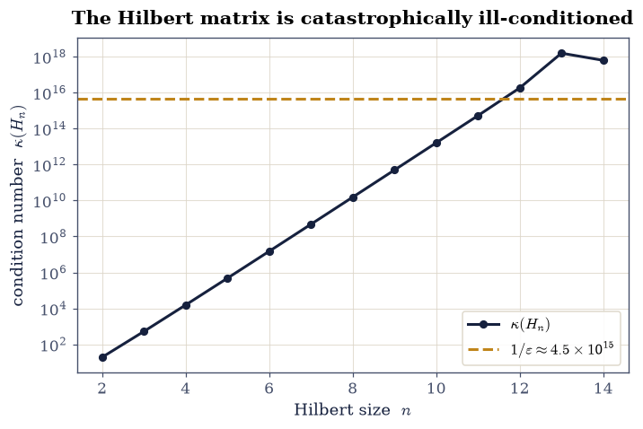
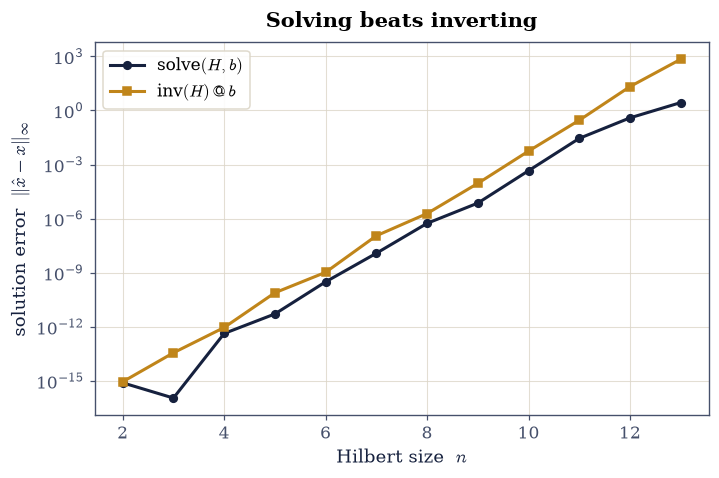

0.4 Linear Systems and Matrix Factorizations#
Notebook overview#
Solving \(A\mathbf x=\mathbf b\) is the most-run computation in physics: it sits under every equilibrium, every normal-mode problem, every fit. We learned to solve it by Gaussian elimination, and perhaps to write \(\mathbf x = A^{-1}\mathbf b\). A computer does neither of those literally. It factors \(A\) into pieces that are trivial to solve (triangular or orthogonal) and it never forms the inverse, because doing so is slower and less accurate. This notebook is about how that works and, just as importantly, when it fails: some matrices are so ill-conditioned that no algorithm, however perfect, can return a correct answer.
We will build back-substitution by hand, then meet the three factorizations a numerical library actually uses: LU (the general workhorse), QR (orthogonal, stable, the basis of least squares), and Cholesky (for symmetric positive-definite matrices), each on an explicit, written-out matrix. The centrepiece is the Hilbert matrix, a one-line definition whose condition number explodes so fast that by \(12\times12\) the solution is destroyed despite a microscopic residual: the linear-algebra face of the round-off limits of §0.1 (\(\text{achievable accuracy}\approx\varepsilon\,\kappa(A)\)).
This is the engine under much of what follows: the eigenproblems of §1.5, §2.6, and §2.7 and the least-squares fitting of §0.8 all rest on these factorizations. It is the first of two linear-algebra notebooks: §0.5 takes up eigenvalues, diagonalization, and the SVD. There are no animations here: factorization is static algebra, and the one geometric motion worth animating (how a matrix maps the unit circle to an ellipse) belongs with the SVD in §0.5.
How to read the checks. Each exercise ends with a
validatecall against an independent fact: a reconstruction \(PA=LU\), an orthogonality \(Q^\top Q=I\), a known solution. A ✓ is strong evidence; a ✗ is a prompt to locate the discrepancy, not a verdict.
Theory in brief#
Solve by factoring, not by inverting#
To solve \(A\mathbf x=\mathbf b\) a computer does not form the inverse, even though pencil-and-paper linear algebra writes the answer as \(\mathbf x=A^{-1}\mathbf b\). Instead we factor \(A\) into triangular or orthogonal pieces, on which the system becomes trivial. A triangular system, in particular, is solved directly by substitution in \(O(n^2)\) operations: for an upper-triangular \(U\), back-substitution sweeps from the last row up, \(x_i = \big(b_i - \sum_{j>i} U_{ij}x_j\big)/U_{ii}\).
Why avoid the inverse? There are two decisive reasons. First, forming \(A^{-1}\) is
not one solve but \(n\) of them: the \(j\)-th column of the inverse is the solution of
\(A\mathbf x_j=\mathbf e_j\) for the \(j\)-th unit vector \(\mathbf e_j\), so assembling
the whole inverse costs roughly three times a single factor-and-solve, and one
must then still multiply \(A^{-1}\) by \(\mathbf b\). That surplus arithmetic
accumulates surplus rounding, leaving the inverse route both slower and less
accurate. Second, the inverse destroys structure: a sparse or banded \(A\) (the
tridiagonal stiffness matrices of §6.10 are typical) has a generally dense
inverse, throwing away exactly the memory and speed the structure was buying,
whereas a factorization keeps the sparsity. One almost never wants \(A^{-1}\) itself;
one wants its action on one particular \(\mathbf b\), and solve delivers precisely
that. Exercise 7 makes the cost-and-accuracy gap quantitative.
Conditioning: the problem, not the method#
How accurately can \(A\mathbf x=\mathbf b\) be solved? That is set by the condition number
the ratio of largest to smallest singular value. It measures how much a relative perturbation of the input is amplified in the output (Trefethen & Bau, Numerical Linear Algebra, Lecture 12, derives the bound). Since the input is already stored with relative error \(\sim\varepsilon\) (§0.1), the best achievable accuracy is \(\sim\varepsilon\,\kappa(A)\): a large \(\kappa\) means even a perfect algorithm loses digits. Conditioning is a property of the problem, not the method.
LU, QR, Cholesky#
We now introduce LU factorization with partial pivoting, the general-purpose
workhorse here, and also exactly what scipy.linalg.solve runs under the hood.
Writing
whereby \(P\) is a permutation matrix (row pivoting, for numerical stability), \(L\) is unit-lower-triangular, and \(U\) upper-triangular, we then solve \(L\mathbf y = P\mathbf b\) and \(U\mathbf x = \mathbf y\) by substitution. When orthogonality is what we want instead, QR factorization
writes \(A\) via an orthogonal \(Q\); it is numerically stable and the basis of least squares (forward link §0.8) and the QR eigenvalue algorithm (forward link §0.5). Cholesky factorization, for a symmetric positive-definite (SPD) \(A\),
is about twice as cheap as LU and is the natural tool for the mass/stiffness matrices of §2.7, covariance matrices, and any energy quadratic form.
Setup#
Imports and a print precision, nothing more. The library factorizations this
notebook examines come ready-made from scipy.linalg (lu, qr, cholesky,
solve, solve_triangular, and the hilbert generator that supplies the
ill-conditioned test matrix); the one piece of machinery the notebook builds by
hand, the \(O(n^2)\) triangular solve that every factorization reduces to, you
write yourself in Exercise 1.
The Setup below holds this notebook’s data and instruments — nothing you are asked to build. It is collapsed so the building stays yours; expand it whenever you want the details.
Exercise 1 — Triangular systems and back-substitution#
A triangular system is the easy case every factorization reduces to. For an upper-triangular \(U\), the last equation involves only \(x_n\), the second-last only \(x_{n-1}, x_n\), and so on, so the unknowns follow from the bottom up, each in one step. The cost is \(O(n^2)\) (one division and a dot product per row), and the result is exact up to rounding.
Nothing here is checked against a library routine: back-substitution is the reference, and the only honest certificate is that the vector it returns reproduces the right-hand side it was given.
Write
back_substitution(U, b), sweeping from the last unknown upward with \(x_i = \big(b_i - \sum_{j>i} U_{ij}x_j\big)/U_{ii}\): one division and one dot product per row, \(O(n^2)\) in all, no matrix ever inverted. Write this one yourself — the implementation is the lesson.Solve the explicit system above with it.
Confirm \(U\mathbf x = \mathbf b\).
solution x = [0.8333 1.3333 2. ]
check U x = [5. 6. 8.] (should equal b = [5. 6. 8.])
Validation 1#
✓ back-substitution solves the triangular system Ux=b [max|Δ| = 0 (rtol=1e-06, atol=1e-12)]
True
Exercise 2 — LU factorization with partial pivoting#
A general matrix is solved by reducing it to triangular pieces: LU with partial pivoting, \(PA=LU\) (Eq. 23), where row swaps recorded in \(P\) keep the elimination numerically stable. Once factored, two triangular solves (\(L\mathbf y=P\mathbf b\), then \(U\mathbf x=\mathbf y\)) finish the job, and the same factorization can be reused for many right-hand sides.
The matrix below is small enough to follow by eye, yet its natural first pivot is not the largest entry in its column, so partial pivoting has something to do:
Factor \(A\) with
scipy.linalg.luand confirm the product of the returned factors reconstructs it.Solve \(A\mathbf x = \begin{bmatrix}1\\2\\3\end{bmatrix}\) with
scipy.linalg.solve(LU under the hood).Check the residual \(\lVert A\mathbf x-\mathbf b\rVert\) sits at the rounding floor.
L =
[[1. 0. 0. ]
[0.25 1. 0. ]
[0.5 0.6667 1. ]]
U =
[[ 8. 7. 9. ]
[ 0. -0.75 -1.25 ]
[ 0. 0. -0.6667]]
solve residual ||A x - b|| = 6.28e-16
Validation 2#
✓ PA=LU reconstructs A [max|Δ| = 4.44089e-16 (rtol=1e-06, atol=1e-12)]
✓ the LU solve satisfies A x = b [max|Δ| = 4.44089e-16 (rtol=1e-06, atol=1e-12)]
True
Exercise 3 — Conditioning: the Hilbert matrix catastrophe#
This is the centrepiece. The Hilbert matrix of size \(n\) is defined entrywise by
It looks utterly benign (small rational entries, symmetric, positive-definite), yet its condition number \(\kappa(H_n)\) of Eq. 22 grows roughly like \(e^{3.5n}\), so the achievable accuracy \(\varepsilon\,\kappa\) collapses fast.
For \(n=4,8,12\) form the Hilbert matrix \(H_n\) (
scipy.linalg.hilbert), take the known exact solution \(\mathbf x=(1,1,\dots,1)\), and build \(\mathbf b = H_n\mathbf x\).Solve \(H_n\hat{\mathbf x}=\mathbf b\) and compare \(\hat{\mathbf x}\) to \(\mathbf x\) alongside \(\kappa(H_n)\) (
numpy.linalg.cond).Show that at \(n=12\) the recovered solution is wildly wrong despite the exact arithmetic being flawless — \(\kappa(H_{12})>10^{15}\) has consumed every digit. Fig. 28 plots \(\kappa(H_n)\) against \(n\).
n= 4: κ(H) = 1.55e+04, ‖x̂ − x‖∞ = 4.23e-13
n= 8: κ(H) = 1.53e+10, ‖x̂ − x‖∞ = 5.44e-07
n=12: κ(H) = 1.81e+16, ‖x̂ − x‖∞ = 3.87e-01
/tmp/ipykernel_2294/1367173583.py:9: LinAlgWarning: An ill-conditioned matrix detected: slice 0 has rcond = 2.5560824980624142e-17.
x_hat = solve(H, b)
/tmp/ipykernel_2294/1367173583.py:20: LinAlgWarning: An ill-conditioned matrix detected: slice 0 has rcond = 2.5560824980624142e-17.
x_hat12 = solve(H12, b12)

Fig. 28 Condition number \(\kappa(H_n)\) of the Hilbert matrix \(H_{ij}=1/(i+j-1)\) versus size \(n\) (log \(y\)-axis): \(\kappa\) grows almost exponentially, crossing \(1/\varepsilon\approx4.5\times10^{15}\) (dashed) around \(n=12\). Past that line the achievable accuracy \(\varepsilon\,\kappa\) exceeds 1 — every digit of the solution can be wrong, exactly as seen for \(n=12\) in the text.#
Validation 3#
✓ the Hilbert matrix is so ill-conditioned that the n=12 solution is destroyed [κ(H₁₂) = 1.81e+16, ‖x̂ − x‖∞ = 0.39]
True
Exercise 4 — Residual versus error (the conditioning lesson, sharpened)#
A natural instinct is to trust a solution whose residual \(\mathbf r = H\hat{\mathbf x}-\mathbf b\) is tiny. For an ill-conditioned matrix that instinct is wrong. A backward-stable solver always returns a small residual, but Eq. 22 relates the error to the residual through \(\kappa\): \(\lVert\hat{\mathbf x}-\mathbf x\rVert/\lVert\mathbf x\rVert \lesssim \kappa(H)\,\lVert\mathbf r\rVert/\lVert\mathbf b\rVert\). A small residual can therefore hide a huge error.
For the same \(n=12\) Hilbert system (exact \(\mathbf x=(1,\dots,1)\), \(\mathbf b=H_{12}\mathbf x\)), compute the residual \(\lVert H_{12}\hat{\mathbf x}-\mathbf b\rVert\) and the error \(\lVert\hat{\mathbf x}-\mathbf x\rVert\) (
numpy.linalg.norm).Confirm the residual sits at the rounding floor while the error is \(O(1)\) — and that \(\kappa\cdot\lVert r\rVert/\lVert b\rVert\) correctly bounds it.
‖H x̂ − b‖ (residual) = 5.44e-16
‖x̂ − x‖ (abs. error) = 6.25e-01
‖x̂ − x‖/‖x‖ (rel. error) = 1.80e-01
κ(H₁₂)·(‖r‖/‖b‖) ≈ 1.88e+00 (bounds the rel. error)
Validation 4#
✓ a tiny residual can hide a huge error when κ is large [residual 5.44e-16, error 0.62]
True
Exercise 5 — QR factorization#
Not every matrix is square, and not every problem wants LU. The QR factorization \(A=QR\) (Eq. 24) writes any \(m\times n\) matrix (\(m\ge n\)) as an orthogonal \(Q\) (columns orthonormal, \(Q^\top Q=I\)) times an upper-triangular \(R\). Because orthogonal maps preserve lengths, QR is exceptionally stable, and it is the foundation of least-squares fitting (forward link §0.8) and the QR eigenvalue algorithm (forward link §0.5).
The tall, thin \(3\times2\) matrix
has exactly the shape LU cannot touch and QR handles without complaint.
Factor \(A=QR\) in economy mode with
scipy.linalg.qr.Confirm \(QR\) reconstructs \(A\).
Verify the columns of \(Q\) are orthonormal (\(Q^\top Q = I_2\)).
Q =
[[-0.169 0.8971]
[-0.5071 0.276 ]
[-0.8452 -0.345 ]]
R =
[[-5.9161 -7.4374]
[ 0. 0.8281]] (upper-triangular)
QᵀQ =
[[1. 0.]
[0. 1.]]
Validation 5#
✓ A=QR reconstructs A [max|Δ| = 4.44089e-16 (rtol=1e-06, atol=1e-12)]
✓ Q has orthonormal columns (QᵀQ=I) [max|Δ| = 6.1844e-17 (rtol=1e-06, atol=1e-12)]
True
Exercise 6 — Cholesky for symmetric positive-definite matrices#
When \(A\) is symmetric positive-definite (SPD), symmetric with all eigenvalues positive, equivalently \(\mathbf z^\top A\mathbf z>0\) for all \(\mathbf z\ne\mathbf 0\), it has a Cholesky factorization \(A=LL^\top\) (Eq. 25) with \(L\) lower-triangular. It is about twice as cheap as LU and never needs pivoting. SPD matrices are everywhere in physics: the mass and stiffness matrices of §2.7, covariance matrices, and any energy quadratic form.
The matrix
is symmetric by inspection, which is only half of what Cholesky demands: the positive-definiteness has to be established, not assumed.
Confirm it is SPD by showing all its eigenvalues are positive (
numpy.linalg.eigvalsh).Factor it as \(A=LL^\top\) with
scipy.linalg.cholesky.Check the reconstruction \(LL^\top = A\).
eigenvalues = [2.3225 2.7858 9.8917] (all > 0 ⇒ SPD)
L =
[[2. 0. 0.]
[1. 2. 0.]
[1. 1. 2.]]
Validation 6#
✓ the matrix is symmetric positive-definite (all eigenvalues > 0) [min eigenvalue = 2.323]
✓ A=LLᵀ reconstructs the SPD matrix [max|Δ| = 0 (rtol=1e-06, atol=1e-12)]
True
Exercise 7 — Never invert: solve via factorization vs. forming A⁻¹#
Writing \(\mathbf x = A^{-1}\mathbf b\) is fine on
paper, but inv(A) @ b is the wrong way to compute it: forming \(A^{-1}\) does
roughly three times the arithmetic of a factor-and-solve, and (because it solves
\(n\) extra systems to build the inverse columns) it accumulates more rounding. On
an ill-conditioned matrix the gap is plainly visible.
For the Hilbert system \(H_{10}\) with known exact solution \(\mathbf x=(1,\dots,1)\) and \(\mathbf b=H_{10}\mathbf x\), compare the error of
scipy.linalg.solve(H, b)againstnumpy.linalg.inv(H) @ b.Show the same comparison across Hilbert sizes \(n=2,\dots,13\) (Fig. 29).
Confirm solving is at least as accurate as inverting.
n=10: error via solve = 4.53e-04, error via inv(H)@b = 5.55e-03
/tmp/ipykernel_2294/2285410623.py:19: LinAlgWarning: An ill-conditioned matrix detected: slice 0 has rcond = 2.5560824980624142e-17.
errs_solve.append(np.linalg.norm(solve(Hn, bn) - xt, np.inf))
/tmp/ipykernel_2294/2285410623.py:19: LinAlgWarning: An ill-conditioned matrix detected: slice 0 has rcond = 2.702756938617348e-19.
errs_solve.append(np.linalg.norm(solve(Hn, bn) - xt, np.inf))

Fig. 29 Solution error \(\lVert\hat{\mathbf x}-\mathbf x\rVert_\infty\) for the Hilbert system \(H_n\mathbf x=\mathbf b\) with known \(\mathbf x=(1,\dots,1)\), comparing solve(H,b) (dark) against inv(H)@b (amber) versus size \(n\) (log \(y\)): factor-and-solve is consistently at least as accurate as forming the inverse, and never less so — the reason production code never computes \(A^{-1}\mathbf b\) explicitly.#
Validation 7#
✓ solving via factorization is at least as accurate as forming the inverse [solve 4.53e-04 ≤ inv 5.55e-03]
True
Exercise 8 — Choosing the right factorization (synthesis)#
A short decision guide, each branch justified by what we saw:
general \(A\) → LU (Eq. 23): the default; what
scipy.linalg.solveruns.least squares / orthogonality wanted → QR (Eq. 24): stable, the basis of fitting (§0.8).
symmetric positive-definite → Cholesky (Eq. 25): about twice as fast, no pivoting (the mass/stiffness matrices of §2.7).
And always: factor and solve, never inv(A)@b (Exercise 7).
The test case is the well-conditioned system
small enough that two different routes to its solution can be compared digit for digit.
Solve it by LU, via
scipy.linalg.solve.Solve it independently by QR: form \(Q^\top\mathbf b\), then back-substitute \(R\mathbf x=Q^\top\mathbf b\) with
scipy.linalg.solve_triangular.Confirm the two solutions agree. (The exact solution is \(\mathbf x=(2,3)\).)
x via LU = [2. 3.]
x via QR = [2. 3.] (exact: [2, 3])
Validation 8#
✓ LU and QR give the same solution to the well-conditioned system [max|Δ| = 8.88178e-16 (rtol=1e-10, atol=1e-09)]
True
Notebook summary#
Triangular solves and LU with partial pivoting (\(PA=LU\), the solve satisfying \(A\mathbf x =\mathbf b\)); the Hilbert matrix as a conditioning catastrophe, and residual versus error.
QR (\(Q^\top Q=I\)) and Cholesky (\(A=LL^\top\) for symmetric positive-definite matrices); and why one never forms \(A^{-1}\) but solves via a factorization instead.
Outlook#
Sparse and banded systems. Most physics matrices are mostly zeros; exploiting structure (a tridiagonal solver) is what makes the 1-D Schrödinger equation of §6.10 tractable: \(O(n)\) instead of \(O(n^3)\).
Iterative solvers. For huge SPD systems, conjugate gradient never forms a factorization at all, converging in far fewer steps than the dimension.
The SVD. The ultimate “what is this matrix doing” tool, and the honest way to define \(\kappa=\sigma_{\max}/\sigma_{\min}\), is taken up in §0.5.
Forward links. These factorizations underlie every eigen/normal-mode computation (§1.5, §2.6, §2.7) and the least-squares fit of §0.8.